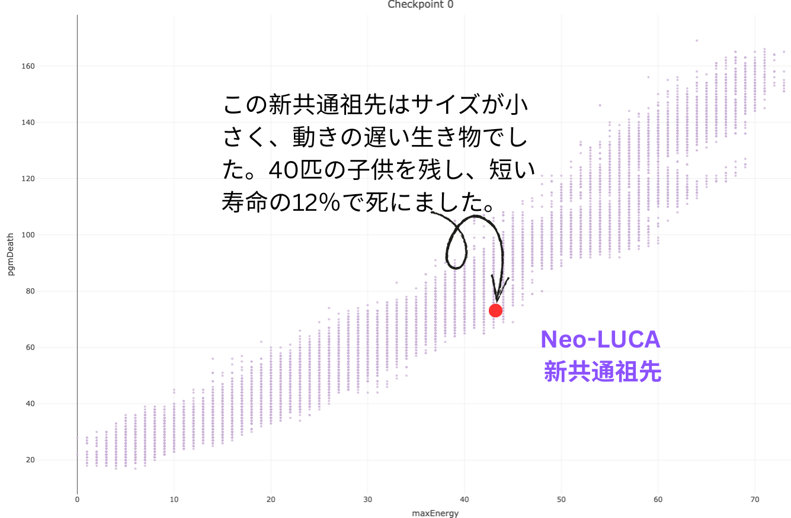

Tree of Life
Each node typically represents an individual organism, and each branch represents mutation and divergence in species. Hover over each agent for descriptive information.
Species Clusters
This is a 2D cluster of species of a particular timestamp. Slide the time slider on the right panel of the phylogenetic tree dashboard below to update this plot.

Phylogenetic Tree
Branches over evolutionary time. Red line marks selected checkpoint.